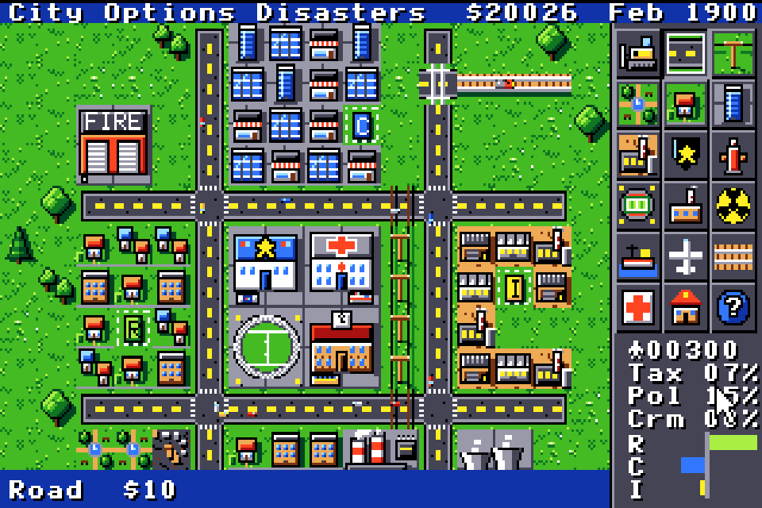
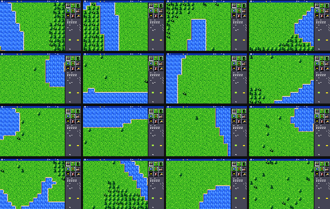
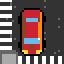

City Planning Office · Apple IIgs · Dwg TT2-001 · Rev 2
TileTown 2
An isometric city builder for the Apple IIgs
The sequel to TileTown, written from scratch in 65816 assembly. This time the city stands up from the map: homes, towers and factories drawn in 32 × 16 diamonds, with cars, trains and tornadoes going behind them. Lay out the roads, zone the land, balance the budget and keep the people happy.
Can't wait? The demo is the whole game for 10 minutes (no saving): download the free demo (800K ProDOS disk, zipped, 120 KB).
- 128 × 128
squares in the map
- 16
maps to start on
- 17
things to build
- 5
goals, or free play
- 8 MB
and an accelerator
The box
Fig. 0 · packaging · drag to turn
Every city builder of 1990 came in a box, so TileTown 2 has one too. Turn it round: the title picture on the front, the new isometric city on the back, with what you need.
- Front - the title screen, the name in gold, a starburst: a city in 3D, 16 maps, 3 levels.
- Back - the city view, four new things in TileTown 2 and the system requirements.
- Spine and top - the six-colour stripe and the name, for the shelf.
Isometric view
Fig. 1 · a town in February 1900 · scale 32 × 16
- 1Fire stationRed brick, two big doors. $500.
- 2HomesFour designs of every house, picked by where it stands.
- 3StadiumWatch the score on the board go up.
- 4Nuclear plantThe cooling tower steams.
- 5Status lineThe tool in hand and what it costs.

- 6The seaCoasts, islands, fjords: 16 maps to start on.
- 7DowntownShops grow in three sizes, up to towers.
- 8ToolboxPick a tool, then click or drag to build.
- 9Level crossingTrains run on the rails, across the road.
- 10IndustryChimneys smoke; pollution spreads.
- 11City figuresPeople, tax, pollution, crime and the R C I bars.
Revision 2
What's new against the original TileTown
| ItemRev | Change | Description | See |
|---|---|---|---|
| A | An isometric city | Buildings stand up from the map, drawn in 32 × 16 diamonds. Cars, trains and tornadoes go behind them. | Fig. 1 |
| B | Four designs of everything | Every house, shop and factory comes in four designs, picked by where it stands, so no two streets look alike. | Detail B |
| C | Traffic that faces the road | Cars, buses and vans face the way they drive; trains run on the rails. | Fig. 1, 9 |
| D | Smooth scrolling | The map scrolls a few pixels at a time. | - |
| E | A living picture | Lakes ripple, chimneys smoke, the nuclear plant steams, the airport's beacon flashes and the stadium's score goes up. | Detail C |
| F | Press I | Switch to the flat top-down map and back. | Fig. 2 & 3 |
Plan view · isometric view
Figs. 2 & 3 · the same town, the same moment
Press I in the game to switch between the flat top-down map and the isometric city. Same streets, same money, same month - one view for laying out, one for looking at.

General notes
Everything from TileTown, carried over to Rev 2
- A living city on a 128 × 128 map. Homes, shops and factories grow in three sizes once they have power, a road and people who want them. Commuters drive to work and back.
- 16 maps to start on: rivers, lakes, coasts, islands, forests, fjords, marshes and plains.
- 17 things to build: roads, rail, power lines, homes, shops, industry, coal and nuclear power plants, police and fire stations, hospitals, schools, parks, a stadium, a seaport and an airport.
- Bridges over water, level crossings, and rail tunnels under lakes and rivers.
- Land value, traffic, pollution and crime spread through the neighbourhoods. People ask for what the city lacks.
- Maps and graphs: heat maps of pollution, crime, land value, traffic, police, fire, health, schools, population and power; graphs over 10 or 100 years.
- A budget with sliders for taxes, roads, police and fire.
- Five disasters: fire, flood, tornado, earthquake and nuclear meltdown - or switch them off.
- Five goals with a deadline, or free play. See Schedule 2.
- Three levels: easy, normal and hard. See Schedule 3.
- Milestones and monthly advice, a city evaluation with a score, and a query tool.
- Menus, pause and three speeds, a help screen, mouse and keyboard.
- Eight save slots, each city under its own name.
- Sound effects and eight relaxed tunes on the Ensoniq sound chip.
Schedules
Rates, goals and levels, as set in the game
Schedule 1 Rates - the toolbox
| Item | Rate | |
|---|---|---|
| Road | $10 | |
| Power line | $5 | |
| Rail a square | $20 | |
| A zone: homes, shops or industry | $100 | |
| Park | $50 | |
| Police station | $500 | |
| Fire station | $500 | |
| School | $800 | |
| Hospital | $1,000 | |
| Power plant (coal) | $3,000 | |
| Stadium | $3,000 | |
| Seaport | $5,000 | |
| Nuclear plant | $5,000 | |
| Airport | $10,000 | |
Schedule 2 Goals
| Goal | Target | Deadline |
|---|---|---|
| Boomtown | 10,000 people | 10 years |
| Shoestring | 2,000 people, starting from only $5,000 | 5 years |
| Clean air | 5,000 people, pollution under 20% | 15 years |
| Safe streets | 5,000 people, crime under 15% | 15 years |
| Rich town | $50,000 in the bank | 20 years |
| Free play | No goal - build as you like | None |
Schedule 3 Levels
| Level | Money to start | Disasters |
|---|---|---|
| Easy | $30,000 | Fewer |
| Normal | $20,000 | Normal |
| Hard | $10,000 | Twice as many |
Five disasters: fire, flood, tornado, earthquake and nuclear meltdown. Switch them off if you'd rather build in peace.

Schedule 4 Sites
Every city starts on one of 16 maps. Pick one in the new-city chooser, with a goal and a level.
- Rivers
- Lakes
- Coasts
- Islands
- Forests
- Fjords
- Marshes
- Plains
Detail sheets
Screens from the game · click to enlarge


Specification
What you need to run TileTown 2
Option AA real Apple IIgs
- Computer
- Apple IIgs
- Memory
- 8 MB
- Drive
- One that boots an 800K 3.5" ProDOS disk
- Accelerator
- ZipGS, TransWarp GS or similar. Runs from 8 MHz, at its best at 16 MHz
- Input
- A mouse is easier; the keyboard works too
Option BAn emulator
- Emulator
- MAME - on the Mac, Ample or EmuBuddy
- Machine
- Apple IIgs
- Memory
- 8 MB
- CPU type
- "16 MHz ZipGS"
- Input
- Mouse or keyboard
The original TileTown still runs on any 2 MB IIgs, no accelerator needed.
Drawing index
Related drawings · more Apple IIgs software by Walter Tengler
 Dwg 01 · Rev 1TileTownThe original city builder, for any 2 MB IIgs, with a free demo
Dwg 01 · Rev 1TileTownThe original city builder, for any 2 MB IIgs, with a free demo Dwg 02 · GameConquer GSReal-time strategy: build a base, harvest ore, conquer the enemy
Dwg 02 · GameConquer GSReal-time strategy: build a base, harvest ore, conquer the enemy Dwg 03 · In developmentConquer 3: SandstormReal-time strategy, three armies in the desert
Dwg 03 · In developmentConquer 3: SandstormReal-time strategy, three armies in the desert Dwg 04 · In developmentHyperhaulSpace trading and combat, filled 3D ships
Dwg 04 · In developmentHyperhaulSpace trading and combat, filled 3D ships
Dwg 05 · In developmentGrand Theft AppleA top-down crime game Dwg 06 · Mac appEmuBuddyAn Apple IIgs emulator for the Mac - to play TileTown 2
Dwg 06 · Mac appEmuBuddyAn Apple IIgs emulator for the Mac - to play TileTown 2 Dwg 07 · UtilityGS CommanderA two-pane file manager
Dwg 07 · UtilityGS CommanderA two-pane file manager Dwg 08 · UtilityGSLauncherA program launcher
Dwg 08 · UtilityGSLauncherA program launcher Dwg 09 · UtilityMegaconvertGSOver 60 picture formats to Super Hi-Res, on the IIgs itself
Dwg 09 · UtilityMegaconvertGSOver 60 picture formats to Super Hi-Res, on the IIgs itself Dwg 10 · DemosIIgs DemosDemo-scene effects in Super Hi-Res
Dwg 10 · DemosIIgs DemosDemo-scene effects in Super Hi-Res- Index · Sheet 0All appsEvery app and game by Walter Tengler
- ArchiveMore retro computing1977 - where it all started